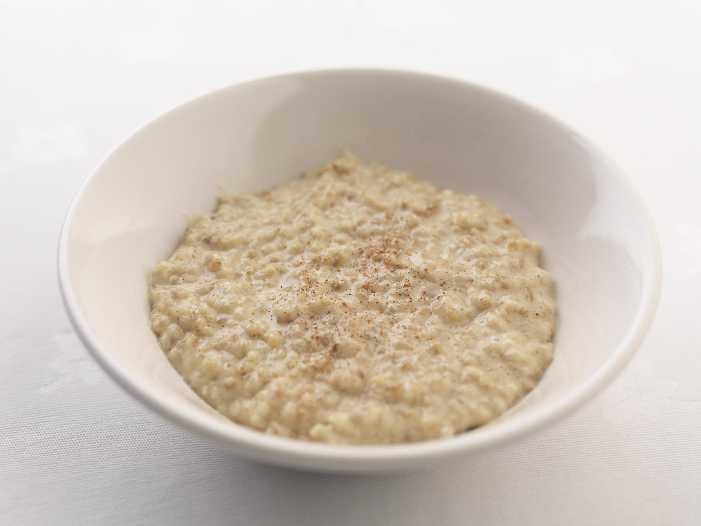

Oatmeal

Description
Nothing fills you up and gives you the energy you need to start the day like a hearty bowl of
piping-hot oatmeal. Oatmeal is my go-to breakfast because it is easy to prepare, healthy, and
keeps me full until lunchtime. No pesky mid-morning cravings here! Let's see what you need to
start making this your favorite breakfast, too.
Ingredients
- 1 c. traditional oats (not quick-cook or steel cut for this recipe)
- 1.5 c. water
- 1 tbsp. brown sugar (optional)
- 1/3 c. blueberries (optinal)
Steps
- Add 1 c. tradiiona oats to a small pan
- Pour 1. c. water over the oats in pan
- Bring your pan to a boil over medium-high heat on your stovetop
- When your oats reach a boil, reduce heat to low and start a timer for 5 min.
- Stir oats as they continue to cook to avoid scalding and cook evenly
- When your timer goes off, transfer your cooked oats to a bowl and add brown sugar and/or bluberries to taste!
- That's it! You're done - enjoy!